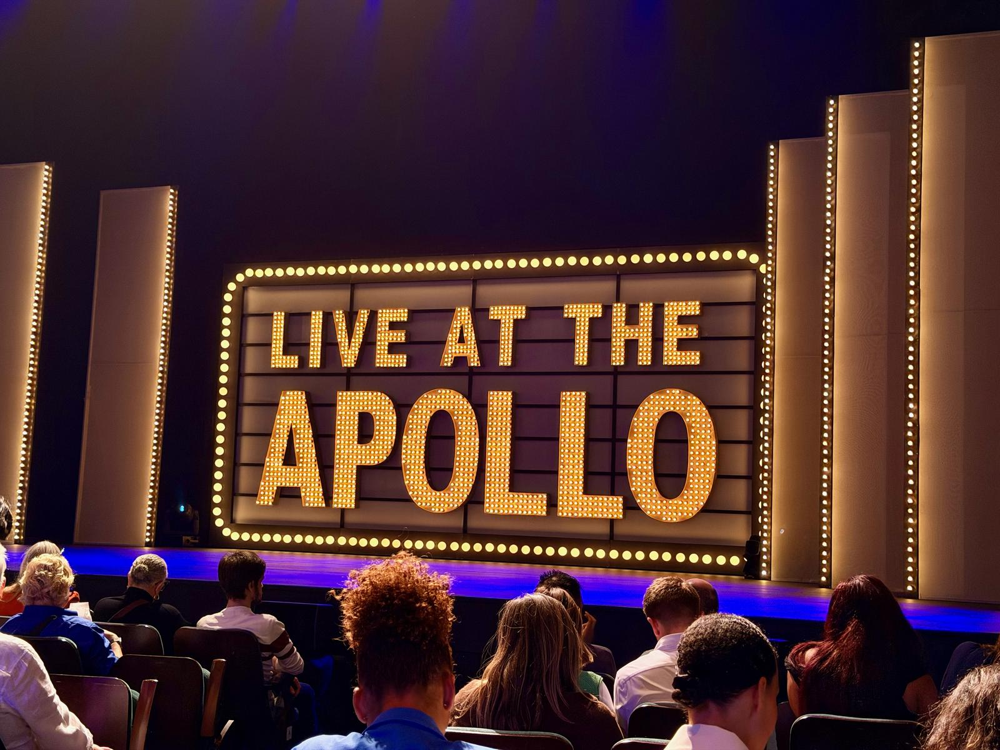

One thing I enjoy is going to TV recordings, as I find it very interesting to get a behind-the-scenes look. Sometimes, everything is as you expect it would be, and sometimes, it’s quite different. Sometimes you get big celebrities, and sometimes you don’t. Either way, it’s free entertainment.
Last night, the husband and I went to see the recording of Live at the Apollo, which, if you don’t live in the UK, is a stand-up comedy show on the BBC. I think the biggest surprise to me was that they shoot two episodes back-to-back. When the host says “Thank you and good night!”, there’s, in fact, just a 20-minute break, and then they go again, with a different lineup.
For that reason, it did end up feeling just a little bit long, but still very enjoyable. A couple of the comedians were very good.
No spoilers, though 🤫
